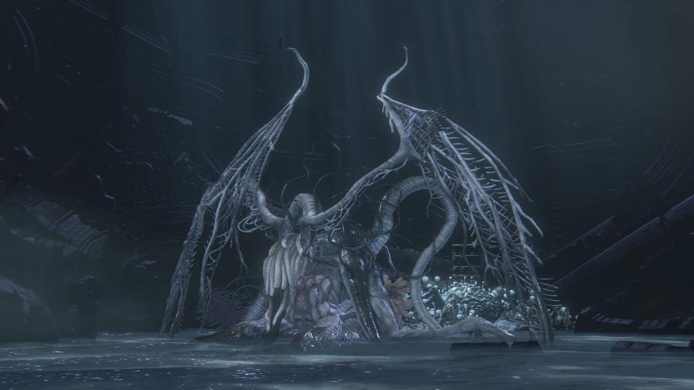
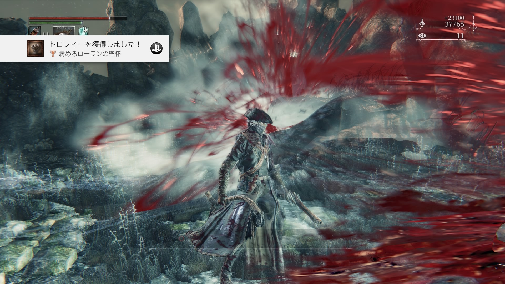
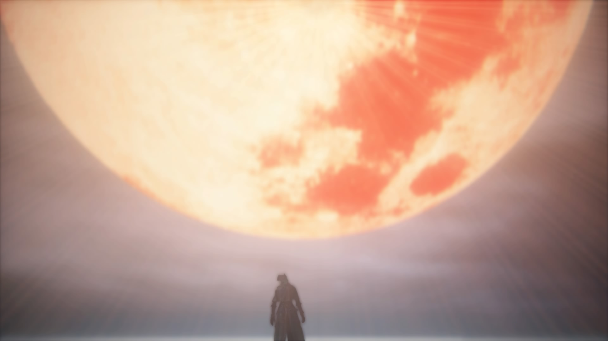

Bloodborne

独特な敵キャラクターの見た目や世界観、面白いギミック満載の仕掛け武器、とてもやり応えのあるゲーム。


ストーリーも面白いが最終的に行き着く先は聖杯である。より強い呪いを受けた血晶を求め地底に潜るのである。啓蒙深き者は星の子や鬼灯に瞳をみいだし、突き進んでいく。
Ahh,Kos,or same say Kosm...
Ooh! Majestic! A hunter is a hunter,even in adream
我ら血によって人となり、人を超え、また人を失う
知らぬ者よ かねて血を恐れたまえ